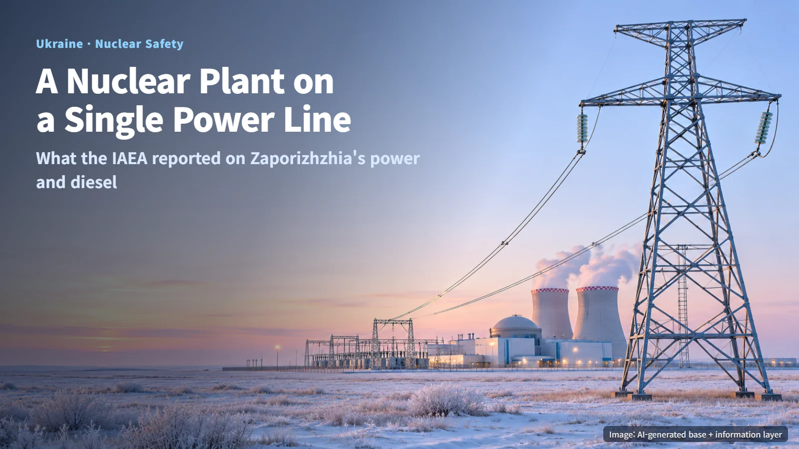
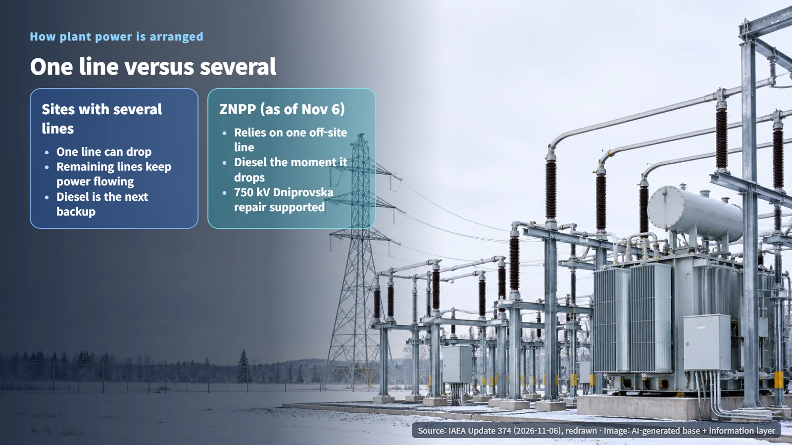
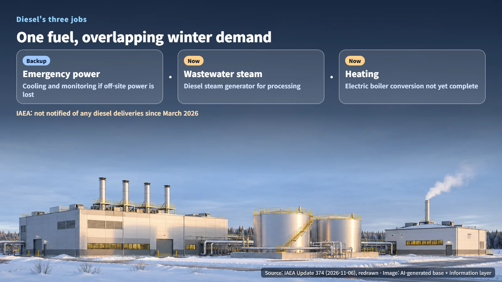

Ukraine · Nuclear Safety
A Nuclear Plant on a Single Power Line: What the IAEA Reported on Zaporizhzhia's Power and Diesel
IAEA Update 374 shows Zaporizhzhia relying on a single off-site power line, with diesel serving as backup power, waste-processing steam and heating fuel.
When news about a nuclear power plant mentions "off-site power" or "diesel," many readers pause. A nuclear plant exists to make electricity, so why would it need electricity from outside, and why would it need fuel oil at all? The International Atomic Energy Agency (IAEA) published Update 374 on the situation in Ukraine on November 6, 2026, and it offers a clear case study for answering that question. At the time of the update, the Zaporizhzhia Nuclear Power Plant (ZNPP) was relying on a single off-site power line.

Why a Shut-Down Reactor Still Needs Electricity
Nuclear fuel keeps producing heat for a long time after fission stops. The atoms created by fission are radioactive, and as they decay they release energy known as decay heat, or residual heat. Think of a pot taken off the stove: the burner is off, yet the pot stays hot for quite a while. In a reactor, that lingering heat has to be removed continuously. The pumps that circulate cooling water and the instrumentation that monitors the reactor's condition all run on electricity.
Under normal conditions, a nuclear plant draws that electricity from the grid. This supply is called off-site power. If off-site power is lost, emergency diesel generators on the site pick up the load and keep the essential equipment running. Our October 21 post on Barakah Unit 3's loss of offsite power rested on the same design. In short, nuclear electrical safety is built on two layers: off-site power as the primary supply, and diesel as the backup.
One Line Versus Several: Ukraine's Nuclear Sites in the IAEA Report
The IAEA explained that damage to substations and instability in the electricity grid were affecting safety functions at nuclear facilities. As of November 6, ZNPP depended on one off-site power line, while Ukraine's other nuclear power plant sites still had multiple lines available.
The reason plants keep several lines is redundancy. Picture a house with two water mains: if one bursts, water still arrives through the other. A site with multiple lines can lose one and keep its off-site power flowing through the rest. A site with only one line turns to its diesel generators the moment that line goes down. Two plants can both be described as "connected to off-site power," yet the margin each has against the next fault differs by exactly this much.

Grid instability also showed up in how the facilities operated. According to the IAEA, safety-related activities were temporarily suspended at one facility, and another facility had an unplanned power reduction, meaning its electrical output was lowered outside its normal schedule. These examples show how directly the condition of the grid carries through to the operation of nuclear plants.
One Fuel, Three Jobs: Diesel at Zaporizhzhia
At ZNPP, diesel fuel serves three purposes at once, with emergency power being only one of them.
- Emergency power: if off-site power is lost, the diesel generators supply electricity to the cooling and monitoring equipment.
- Steam for treating radioactive wastewater: the site informed the IAEA that it had resumed processing radioactive wastewater because some storage tanks were running short of spare capacity. Under current conditions, the steam needed for that processing comes from diesel-fired steam generators.
- Heating: a conversion to electric boilers, intended to reduce reliance on diesel for heating, has yet to be completed.
In effect, all three uses draw on the same fuel supply. That shared dependence becomes more pronounced in winter. Heating demand rises in the colder months, wastewater processing continues, and with only one off-site line, diesel for emergency power has to stay ready at all times. Three demands converge in a single season.

The IAEA stated that diesel consumption at ZNPP continues and that it has not been notified of any deliveries since March 2026. The current stock level was not disclosed in this update. Once the electric boiler conversion is finished, heating can shift to electricity, allowing diesel to be concentrated on emergency power and wastewater processing. Electric boilers themselves draw on off-site power, so the benefit of the conversion is tied to the state of the power lines.
What to Watch Next: Line Repairs and Winter Readiness
The IAEA said it is continuing its efforts toward a local ceasefire to support repairs to ZNPP's 750 kV Dniprovska line and the associated substation. A 750 kV line is an extra-high-voltage transmission line built to carry large amounts of power over long distances. Each restored line adds another path for off-site power to reach ZNPP.
Three points are worth following from here. First, whether the off-site power lines and substations are restored. Second, any published information on diesel deliveries and stock levels. Third, completion of the electric boiler conversion and the availability of auxiliary systems through the winter. Each of these can be tracked through IAEA updates issued after the November 6 report.
Nuclear safety starts with the equipment inside the reactor building and extends all the way out to a single power line entering the plant and the fuel sitting in a storage tank. Looking at the number of lines alongside the different uses of diesel makes it clear why even a reactor that has stopped fission keeps needing both electricity and fuel.